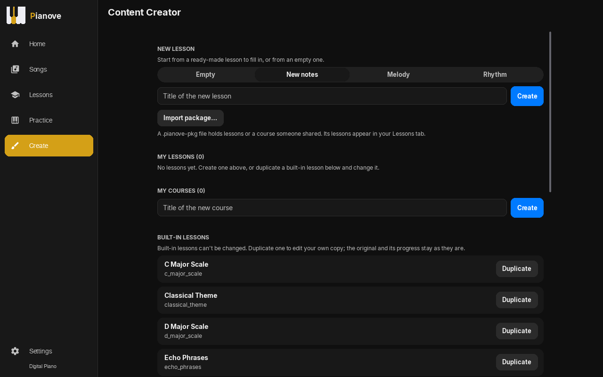
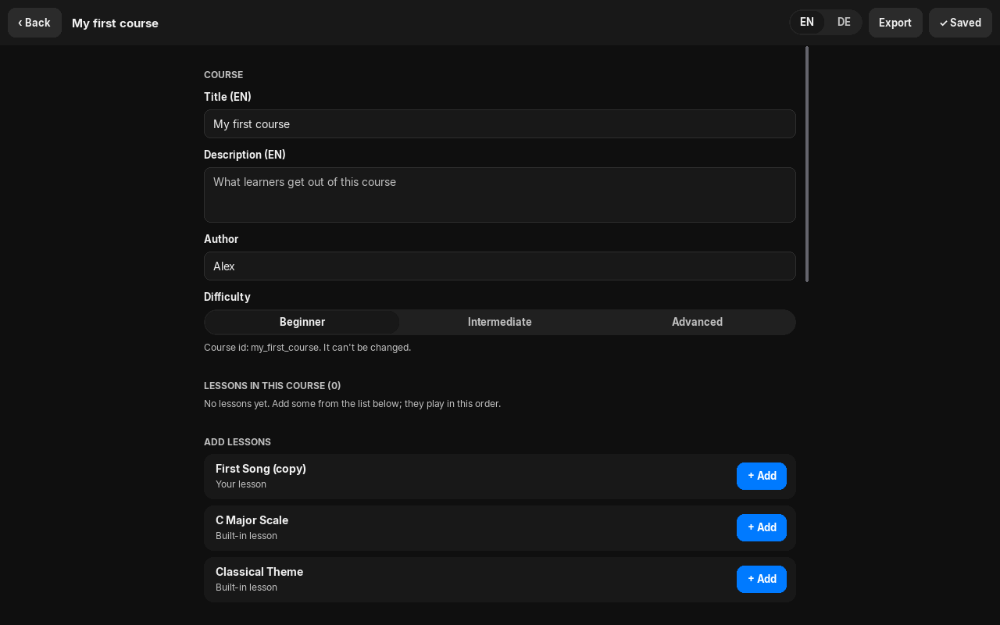

Making Lessons
Creator Mode
Write your own lessons and courses inside the app, test them, and share them as one file.
Turning it on
Open Settings → Content Creator and switch on Creator Mode. A new tab, Create, appears in the sidebar.

From here you can:
- Create a lesson, empty or from a template: New notes, Melody or Rhythm.
- Create a course and fill it with lessons.
- Duplicate a built-in lesson to change your own copy; the original and its progress stay as they are.
- Import and export packages.
The lesson editor
A lesson is built like the built-in ones: chapters of screens that explain, then a piece to play. The outline on the left shows them in order; select one to edit it on the right, with a live preview on top.

There are four kinds of screen:
| Screen | What the learner sees |
|---|---|
| Explain | Text, with keys highlighted or named on the keyboard |
| Listen & play | Pianove plays a short phrase, the learner plays it back; it can be shown on a staff |
| Find the keys | The learner finds and plays the keys you picked |
| Hand position | Where the fingers rest, with their numbers |
Write a phrase by tapping keys on the preview, by playing it on your keyboard, or with Record to a metronome. Suggest fills in the fingering.
Writing the piece
The piece has a small score editor: one staff or both hands, time signature, note values from sixteenths to whole notes, dots, triplets, rests, chords and ties. Notes can be dragged up and down. On a computer keyboard:
| Key | Does |
|---|---|
| A – G | Insert a note |
| Shift + A – G | Add a note to the chord |
| 3 – 7 | Note value: 16th … whole |
| . | Dot |
| Ctrl + 3 | Triplet |
| 0 | Rest |
| T | Tie |
Or bring the bars in from a file with Import MusicXML… and pick the hand.
Checking and testing
The editor checks the lesson as you go (Lesson details → Check): missing titles or translations, notes that aren't notes, bars that are too full, fingerings that don't match. Tap a problem to jump to it. You can save and test anyway.
Test plays the lesson exactly as a learner would, starting at the screen you're on; Back returns to the editor. Test runs don't count as progress.
Translation
You write in the app's language; Translation lists every text with an empty field for the other language, and counts what's still missing.
Courses
A course is a title, a description, a difficulty and an ordered list of lessons, built-in or your own.
